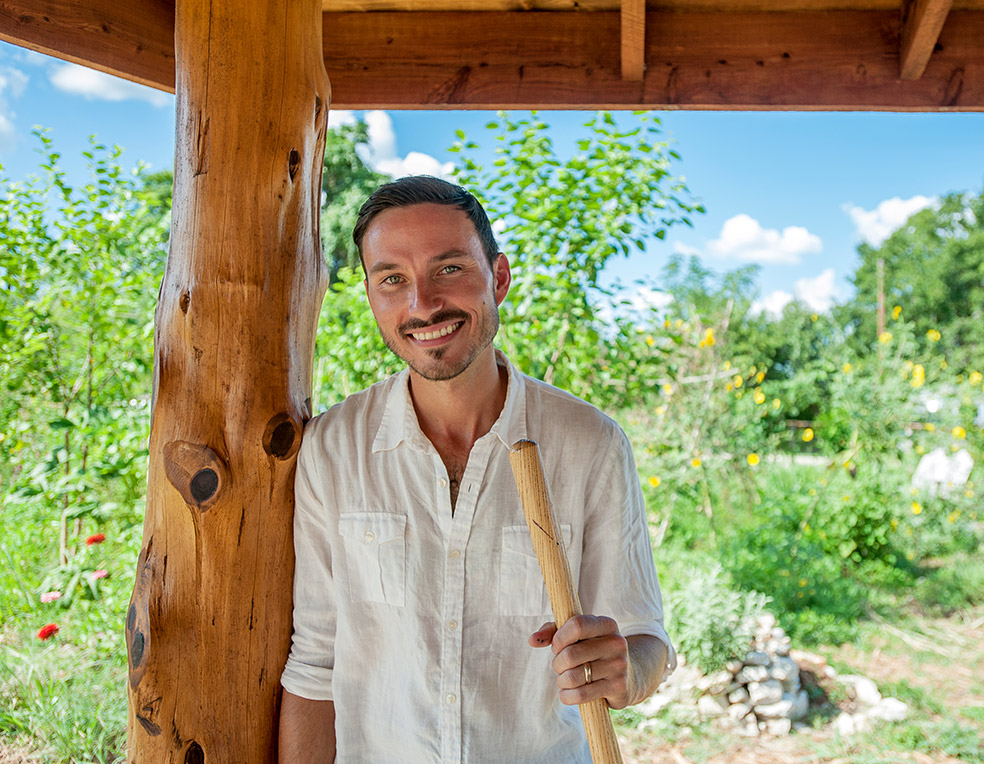
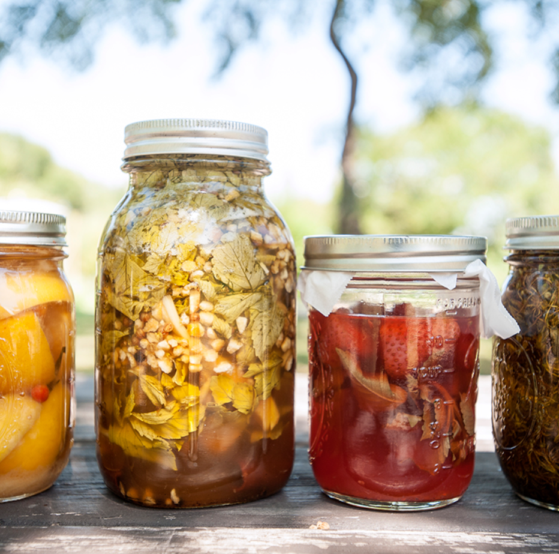
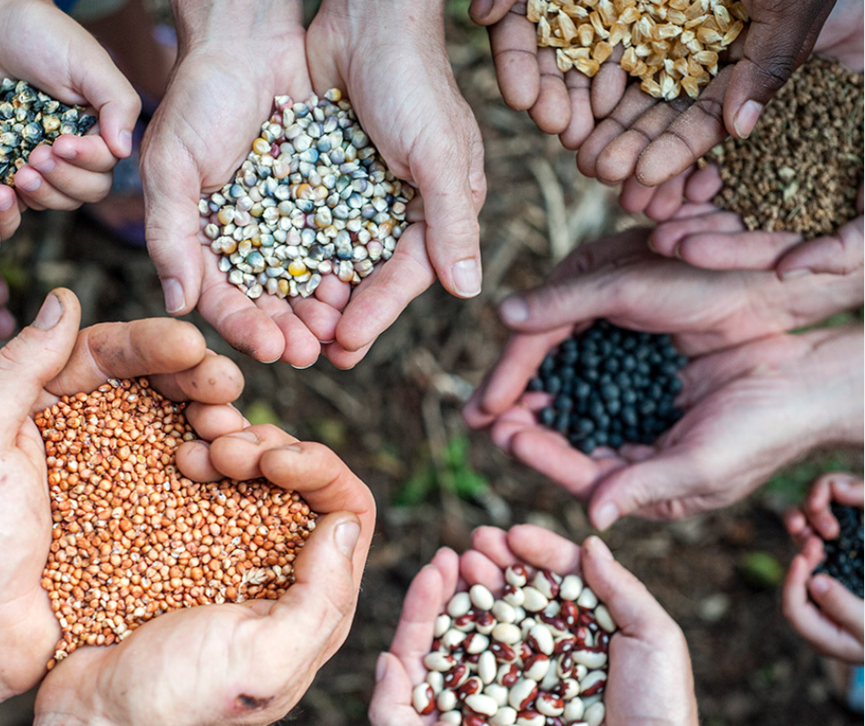
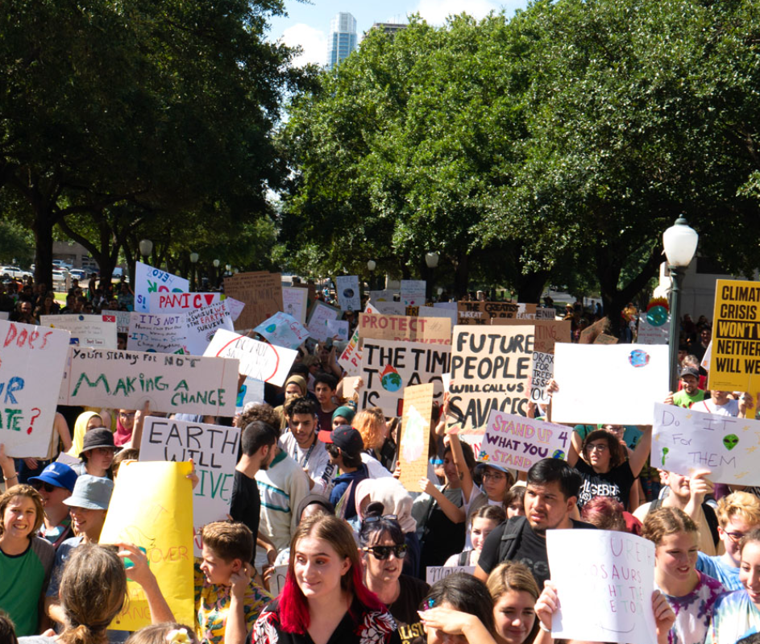
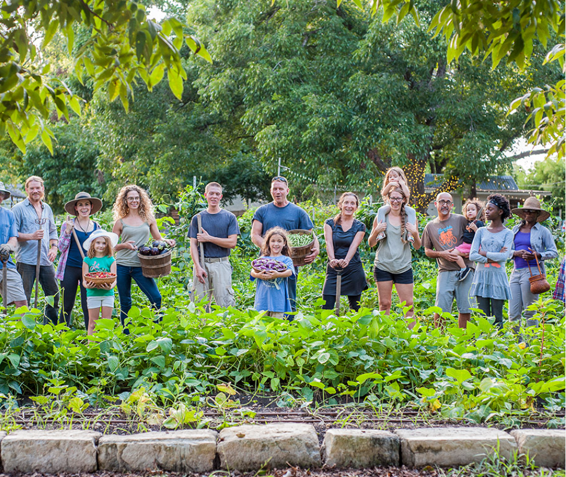

Our Mission
To empower individuals to live a sustainable lifestyle by providing resources, education, and community
support.
To sustain is to support, strengthen, and nourish. A truly sustainable lifestyle is regenerative- empowering
the growing
wellness of our communities, the Earth, and ourselves.

ONLINE CLASSES
Learn from renowned authors and experts! The Sustainable Living Guide’s Online Classes give you
unprecedented access to
training with prominent teachers from around the world, from the convenience of wherever you are. Supporting
your
vibrant lifestyle with expertise from across the full spectrum of sustainable wellbeing. Explore classes
from gardening
and Permaculture, to holistic health and personal development, to community organizing and climate change
emergency
response. Whether you’re just getting started or are already deeply rooted in regenerative green living, we
have
education that will make a huge difference in your life. New classes are continually being posted to help
you as you
grow. Choose from simple single video workshops through comprehensive certification courses.

DIRECTORY
Discover abundant resources to support healthy, joyful, sustainable living. View the Sustainable Living
Guide’s
Directory in full and expand your horizons, or customize your personal directory to quickly find the
specific topic and
location of your choice. Featuring products, services, activities, organizations and more.Our motivated
community is actively looking for new resources – Get found in our Online Directory! Your directory
listing also includes the unique opportunity to increase your business by participating in Member Specials
sales
ONLINE EVENTS
Gather with leaders, teachers, and worldwide community to catalyze the well-being of the people and the
planet. The
Sustainable Living Guide presents online events sharing diverse expertise and exciting innovation from
around the world.
These special events feature topics across sustainable living, holistic health, community building,
ecological
regeneration, climate change and emergency response mobilization, personal growth, social entrepreneurialism
and more.
We believe in humanity’s ability to bring forth potent solutions and deep-hearted wisdom. Many events are
offered at no
cost as part of our service to empowering positive transformative action. You are invited to partake in this
wellspring
of our global community’s knowledge.

MEMBERSHIP
Come thrive with us! Sustainable Living Guide members enjoy extensive savings while helping to heal the
Earth. Members
receive 10% off Online Classes – every class, every day. Benefits include ongoing informative resources from
experts and
access to Member Specials sales from our Directory businesses. The member community also has an important
role in The
Sustainable Living Guide’s grants program. 20% of membership fees go to Community Sustainability Grants and
members can
nominate candidates. Join us as we grow flourishing sustainability and cultivate community caring. Only
$5/month.

GENERATION EARTH
Generation Earth is the dynamic youth branch of The Sustainable Living Guide, by and for people in their
teens and
twenties. We are a global movement of the next generation creating positive change in the world, in
ourselves and in
each other! Generation Earth directly supports the upcoming generation, valuing and amplifying our voices
and providing
a unique platform for us to activate together. We are learning, engaging in exciting solutions, and having
fun doing it!
We choose to empower ourselves to shape what our lives and our shared future will be – sustainable, just,
happy and
free!

GRANTS
We strongly believe in empowering community sustainability and regenerative resilience. Our business model
is designed
to channel funding to local sustainability projects around the world. 20% of membership fees and 5% of
everything else
we offer, such as online classes and directory listings, goes to our Community Sustainability Grants. Annual
voting on
social media will select grant winners while providing huge exposure for all finalists. Thank you for making
these
grants possible by being part of The Sustainable Living Guide community. Together we can co-create a
thriving future for
all!